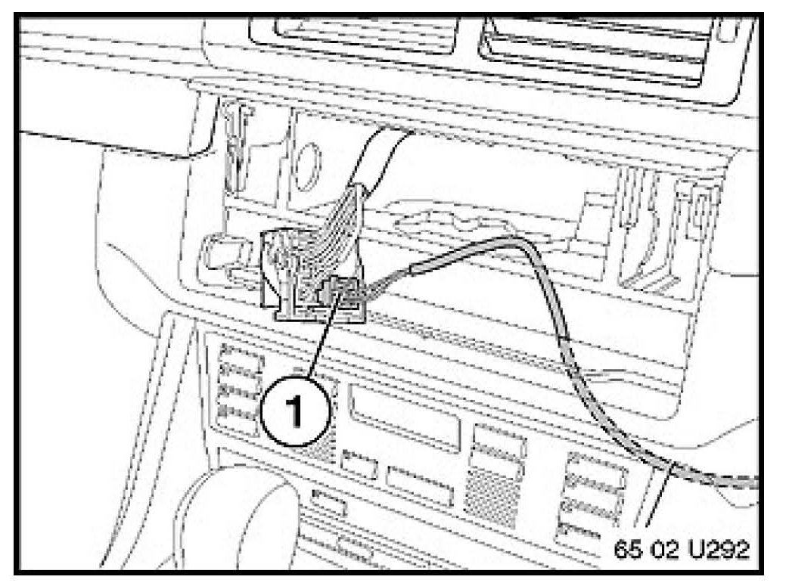
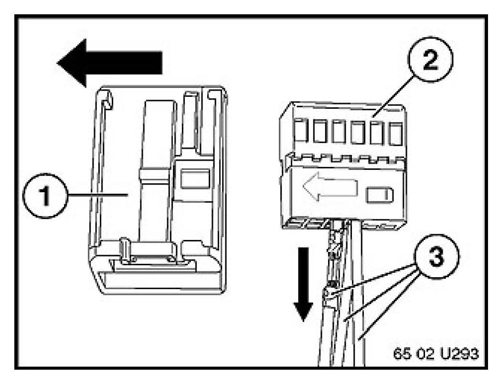
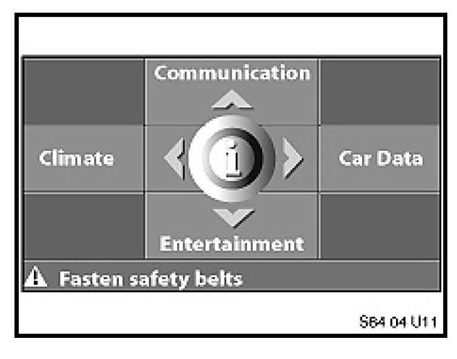
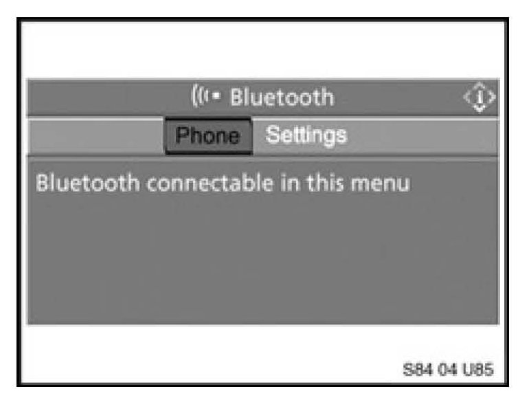
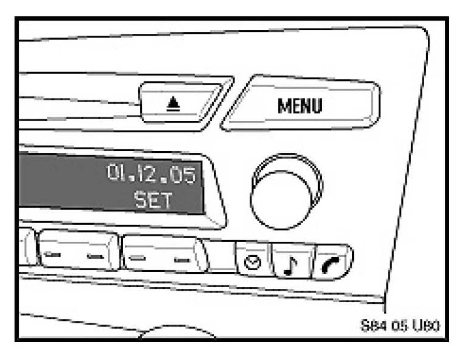
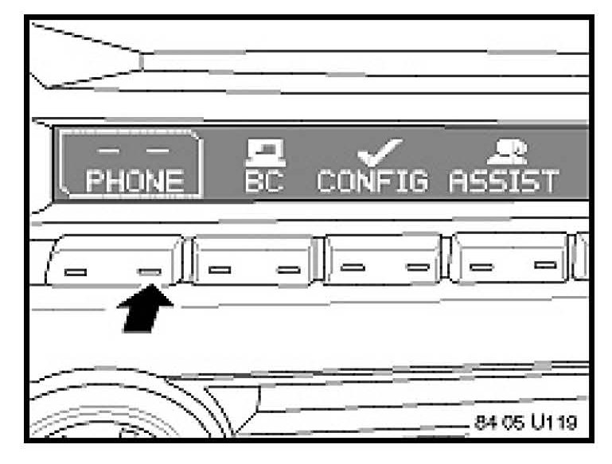
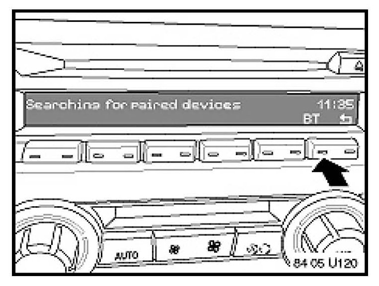
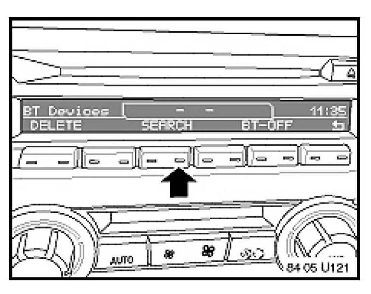
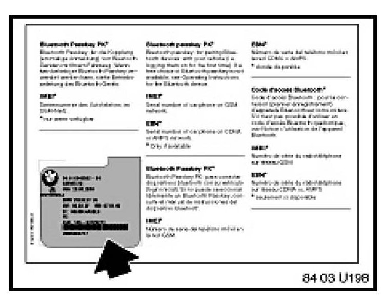

Cell Phone - One Way Audio With Bluetooth(R) Handset
SI B 84 19 07Communication Systems
October 2007
Technical Service
SUBJECT
One Way Audio when Using a Bluetooth Enabled Handset
MODEL
E46 (3 Series) with Premium Package (ZPP) or BMW Assist (SA 639) from 9/04 production (325i/iA from 10/04 production)
E53 (X5) with Premium Package (ZPP) or BMW Assist (SA 639) from 10/04 production
E60, E61 (5 Series) from 9/04 production E63, E64 (6 Series) from 9/04 production E65, E66 (7 Series) from 3/05 production
E70 (X5) with Premium Package (ZPP) or BMW Assist (SA639)
E83 (X3) with Premium Package (ZPP) or BMW Assist (SA639) from 9/04 production
E85, E86 (Z4) with Premium Package (ZPP) or BMW Assist (SA639) from 10/04 production
E90, E91, E92, E93 (3 Series) with Premium Package (ZPP) or BMW Assist (SA639)
SITUATION
When placing a phone call, the customer has one of the following complaints:
^ Complaint # 1: The person on the landline side of the call cannot hear the person in the vehicle but the person in the vehicle can hear the caller.
^ Complaint # 2: The person in the vehicle cannot hear the landline side of conversation, but the person on the landline side can hear the caller in vehicle.
COMPATIBLE HANDSET INFORMATION
Before the complaint can be addressed, the particular handset must be verified for compatibility. On vehicles equipped with BMW Assisttrade; with Bluetoothreg; wireless technology, confirm whether or not the phone is compatible. Visit www.bmwusa.com/bluetooth for a list of handsets that have passed BMW testing for compatibility. Note the following disclaimer on this web site:
^ "This list is provided for reference only. The mobile phones listed here have passed compatibility tests as of the date of testing and meet or exceed minimum standards established by BMW. The list is not a warranty for phone performance or functionality. BMW makes no guarantees or warrantees as to the performance of each phone while connected to your BMW via Bluetooth Wireless Technology. Furthermore, software releases by BMW, the phone supplier or the wireless carrier dated after testing might alter compatibly results. While many phones are offered with Bluetooth Wireless Technology, not all phones support the necessary profiles to work with your BMW. BMW does not guarantee availability or functionality with all wireless carriers. Functions such as synchronizing the address book and transferring a call into or out of the vehicle may function differently from phone to phone".
PROCEDURE FOR COMPLAINT # 1
When the person on the landline side of the call cannot hear the caller in vehicle, check the following:
1. Verify the customer's complaint.
2. Check the production date of the vehicle.
^ E60, E63 and E64 - The TCU hardware in vehicles built prior to 3/04 production does NOT support Bluetooth technology and will exhibit this complaint.
^ E46, E83 - The TCU hardware in vehicles built prior to 9/04 production (325i/iA from 10/04) does NOT support Bluetooth technology and will exhibit the same complaint.
^ E53, E85 - The TCU hardware in vehicles built prior to 10/04 production does NOT support Bluetooth technology and will exhibit the same complaint.
If a customer would like to upgrade the vehicle to support Bluetooth wireless technology at their own expense, please refer to SI B84 14 05.
3. Perform a short test using BMW Diagnostic tools. Work through any corresponding test modules.
4. Check the BMW Assist account status on DCSnet. The BMW Assist services expiration date and the TCU activation status can be checked on DCSnet under Service/Vehicle History Inquiry. Refer to SI B02 01 06 (Updated DCSnet Vehicle History Inquiry information on BMW Assist) for additional information.
5. Does the customer have an active BMW Assist contract?
^ If no, proceed to step 7.
^ If yes, check the microphone circuit by placing a BMW Assist call. Follow the procedure outlined in the "TEST OF BMW ASSIST SERVICES" section of this bulletin. Then proceed with step 6.
If the connection is established but voice communication is not established, call BMW Assist Customer Care immediately at (888) 333-6118, option #4 to cancel the dispatch. Failing to call will result in local emergency services being dispatched to your location.
6. Does the audio work both ways when making an assist call?
^ If yes, proceed to step 11 because if the audio is OK during an Assist call. This means you have verified the integrity of the microphone circuit.
^ If no, proceed to step 7.
7. Check microphone circuit. Perform test module B8400_00122.
^ If the test module is inconclusive, proceed to step 8.
^ If the test module is conclusive, follow the BMW diagnostic tool's recommended repair.
8. Check for voltage between pin 1 and 2 at the microphone. Was it between 9 and 9.5 volts?
^ If yes, proceed to step 9.
^ If no, disconnect the 54 pin connector (X14133) at the TCU. Check the wiring for shorts or an open circuits. If a wiring problem is found, repair as necessary and retest.
^ Pin 1 at the TCU goes to pin 1 at the microphone.
^ Pin 19 at the TCU goes to pin 2 at the microphone.
9. Install a breakout box between the TCU and the 54 pin connector (X14133).
10. Using oscilloscope function of BMW Diagnostic tools, check between pin 1 (MIC+) and pin 19 (MIC-) while someone is speaking into the microphone.
^ If there is corresponding oscillation to someone speaking into the microphone, the microphone circuit is OK. Proceed to step 11.
^ If there is no oscillation and the wiring you testing in step 8 passed, replace the microphone. Retest the system.
11. Delete all paired devices from the TCU following the 'PROCEDURE - DELETING PAIRED DEVICES' section of this bulletin.
12. Pair a known good (reference) compatible handset with the vehicle following the procedure outlined in SI B84 13 04.
13. Allow the phone book to complete downloading.
14. Place a phone call. Does the landline side audio work correctly?
^ If yes, the problem is a handset issue. No further diagnosis is necessary. Have the client advisor inform the customer the problem is a handset issue. Refer the customer to www.bmwusa.com/bluetooth to obtain details on the latest list of compatible handsets.
^ If no, proceed to step 15.
15. If the reference handset has the same problem and the microphone circuit is good, the TCU is defective, refer to the "TCU REPLACEMENT PROCEDURE" section of this bulletin.
PROCEDURE FOR COMPLAINT # 2
When the person in the vehicle cannot hear the landline side of conversation, but the person on the landline side can hear the caller in vehicle, check the following:
1. Verify the customer's complaint.
2. Check the production date of the vehicle.
^ E60, E63 and E64 - The TCU hardware in vehicles built prior to 3/04 production does NOT support Bluetooth technology and will exhibit this complaint.
^ E46, E83 - The TCU hardware in vehicles built prior to 9/04 production (325i/iA from 10/04) does NOT support Bluetooth technology and will exhibit the same complaint.
^ E53, E85 - The TCU hardware in vehicles built prior to 10/04 production does NOT support Bluetooth technology and will exhibit the same complaint.
3. Perform a short test using BMW Diagnostic tools. Work through any corresponding test modules.
4. Delete all paired devices from the TCU following the "PROCEDURE - DELETING PAIRED DEVICES" section of this bulletin.
5. Pair a known good (reference) compatible handset the vehicle following the procedure outlined in SI B84 13 04.
6. Allow the phone book to complete downloading.
7. Place a phone call. Does the in vehicle audio work correctly?
^ If yes, the problem is a handset issue. No further diagnosis is necessary. Have the client advisor inform the customer the problem is a handset issue. Refer the customer to www.bmwusa.com/Bluetooth to obtain details on the latest list of compatible handsets.
^ If no, proceed to step 8.
8. Check the BMW Assist account status on DCSnet. The BMW Assist services expiration date and the TCU activation status can be checked on DCSnet under Service/Vehicle History Inquiry. Refer to SI B02 01 06 (Updated DCSnet Vehicle History Inquiry information on BMW Assist) for additional information.
9. Does the customer have an active BMW Assist contract?
^ No, proceed to step 12.
^ Yes, check the audio circuit by placing a BMW Assist call. Follow the procedure outlined in the "TEST OF BMW ASSIST SERVICES" section of this bulletin. Then proceed with step 10.
If the connection is established but voice communication is not established, call BMW Assist Customer Care immediately, at (888) 333-6118, option #4 to cancel the dispatch. Failing to call will result in local emergency services being dispatched to your location.
10. Does the audio work both ways when making an assist call?
^ If no, proceed to step 11.
^ If yes, the audio circuit is OK. This also means the wiring from the TCU to the radio / head unit is OK and the output stage of the radio is OK. The TCU is defective; refer to the "TCU REPLACEMENT PROCEDURE" section of this bulletin.

11. Was an iPod adaptor or an auxiliary input retrofitted into the vehicle?
^ If yes, check the wiring at the back of the radio. The wires were to be transferred from the original connector to the connector that comes with the aux/iPod wiring harness.

^ Refer to the specific installation instructions for the accessory that was installed in the vehicle.
^ Note: The installation instructions can be obtained from Aftersales Assistance Portal (ASAP).
Steps 12 to 16 are for I/K-bus vehicles (E.g. E46, E53, E83, E85, E86) only.
12. Check the following at the radio:
^ Pin 10 is the 'Telephone mute' signal--- Does the signal change when a call is placed? Note: this is a high / low signal.
^ If yes, the circuit is OK.
^ If no, check the mute signal as outlined in step 14.
^ Pin 11 is the 'Telephone on' signal --- Does the signal change when a call is placed? Note: this is a high / low signal.
^ If yes, the circuit is OK.
^ If no, check the Telephone on signal as outlined in step 14.
^ Pin 6 and 12 is the speaker circuit coming from the TCU. Scope the circuit and place a phone call. Is an oscillation pattern seen that correlates to the person on the landside of the call speaking?
^ A, If yes, the circuit is OK.
^ If no, check the speaker circuit as outlined in step 14.
13. If the 'Telephone mute' signal, 'Telephone on' signal and the speaker circuit are all good, replace the radio.
14. In accordance with your results in step 12 check the following circuits at the 54 pin connector of the TCU with the wires removed from the harness connector:
^ Pin 51 is the 'Telephone mute' signal. Does the TCU output signal change when a call is placed? Note: this is a high / low signal.
^ If yes, the TCU output OK, proceed to step 15.
^ If no, proceed to step 16.
^ Pin 33 is the 'Telephone on' signal. Does the TCU output signal change when a call is placed? Note: this is a high / low signal.
^ If yes, the TCU output OK, proceed to step 15.
^ If no, proceed to step 16.
^ Pin 37 and 38 are the speaker circuit. Is an oscillation pattern seen that correlates to the person on the landside of the call speaking?
^ A, If yes, the TCU output OK, proceed to step 15.
^ If no, proceed to step 16.
15. If all the signals check OK, check and repair the wiring between the TCU and the radio.
16. If the signal is not OK, the TCU is defective. Refer to the "TCU REPLACEMENT PROCEDURE" section of this bulletin.
17. On MOST-bus vehicles (E60, E63, E65, E70, E90, etc.), perform a head unit audio tone test using BMW Diagnostic tools. Did the head unit pass the audio tone test?
^ If no, continue diagnosis of the head unit.
^ If yes, the TCU is defective; refer to the "TCU REPLACEMENT PROCEDURE" section of this bulletin.
PROCEDURE - DELETING PAIRED DEVICES
Deleting paired devices on MOST-bus vehicles with a CD/CID (E.g. E60, E63, E65, E70, E90, etc.)

1. Turn the key on.
2. Press the "Menu" button and ensure that the Central Information Display (CID) is set to the basic menu screen.
3. Press down briefly on the controller to enter the i menu.
4. Scroll down to the "Communication settings" and select.
5. Select "Bluetooth" and press the controller.
6. Select "Phone" and press the controller.

7. "Bluetooth connectable in this menu" is displayed along with a list of previously paired devices.
8. One at a time, select each handset listed in the device list and press down on the controller. A pop up menu will be displayed asking if you want to delete the device. Select "yes".
9. Turn the ignition off and wait for the MOST-bus to enter sleep mode (approximately 4 minutes).
10. Delete all Bluetooth devices from the handset's Bluetooth device list. Refer to the handset's owner manual or the handset manufacturer's website for details on how to perform this procedure.
Deleting paired devices on MOST-bus vehicles with a RAD2 (E.g. E90, E91, E92, E93)

1. Turn the key on.
2. Press the "MENU" button.

3. Turn right knob to highlight "Phone".
4. Press the function button under "Phone".

5. "Searching for paired devices" is displayed.
6. Press the function button under "BT".

7. Using the right knob, select each device from the previous paired device list and then press the function button under "DELETE".
8. Turn the ignition off and wait for the MOST-bus to enter sleep mode (approximately 4 minutes).
9. Delete all Bluetooth devices from the handset's Bluetooth device list. Refer to the handset's owner manual or the handset manufacturer's website for details on how to perform this procedure.
Deleting paired devices on I/K-bus vehicles (E.g. E46, E53, E83, E85, E86):
1. Delete all Bluetooth devices from the handset's Bluetooth device list. Refer to the handset's owner manual or the handset manufacturer's website for details on how to perform this procedure.
2. Perform a short test on the vehicle using the BMW Diagnostics tools if it was not already completed.
3. Select 'Control Unit functions'
4. Select the 'TCU'
5. Select 'keypad handset Bluetooth mobile'
6. Select 'number of Bluetooth devices' and press 'Display'
7. The number of paired devices will be displayed (This is the total number of devices that have been previously paired to the vehicle)
8. Select 'Delete list of Bluetooth devices' and press 'Activate'
9. Select 'number of Bluetooth devices' and press 'Display' (This should now display '0')
10. Turn the ignition off for two minutes
TCU REPLACEMENT PROCEDURE
1. It is NOT necessary to obtain a Part Replacement Authorization (TeileClearing) for this specific issue. Refer to the Warranty section of this bulletin for more details. Additional information can be found in SI B84 23 05 (Enhanced Support for BMW Assist Telematics Control Unit (TCU) with Bluetooth & CPT9000 Phone Systems).
2. Refer to TIS (RA 84 11...) for the TCU replacement procedure.
3. Before installing the new TCU, remove one copy of the Electronic Serial Number (ESN) label and place it on the repair order for reference during warranty claim entry. You will be asked for the new TCU "ESN" when submitting a claim via DCSnet. Refer to SI B01 10 05 for more details.

4. The second ESN label of the TCU should be affixed over the existing label in the Owner's Manual insert (P/N 01 49 0 157 963).
5. Complete the TCU installation
6. Using Progman V27.01.00 or higher, program the complete vehicle. Refer to SI B09 05 01 "Coding, Individualization and Programming", Procedure A.
7. On E60, E61, E63, E64, E65 (from 3/05), E66 (from 3/05) E70, E90, E91, E92, E93 vehicles: Initialize BMW Assist following the procedure as outlined in the 'INITIALIZATION OF BMW ASSIST SERVICES" section of this bulletin.
8. Test BMW Assist by following the procedure outline in the "TEST OF BMW ASSIST SERVICES' section of this bulletin.
INITIALIZATION OF BMW ASSIST SERVICES
1. The BMW Assist services initialization procedure must be completed per SI B84 15 03 for all
^ The vehicle must be in the Verizon Wireless Network for the initialization procedure to work properly. If the vehicle is not in the Verizon Wireless Network perform these additional steps.
^ Create a PuMA case to received TCU shipping authorization.
^ Remove the TCU from the vehicle.
^ Send via FedEx the TCU, BMW Assist TCU Reactivation Form with the new MIN/MDN numbers and a copy PuMA case to:
BMW of North America, LLC.
Attn: Body Electrical Technical Hotline (TCU Reactivation B84 19 07)
1 BMW Plaza
Montvale, NJ 07645
^ BMW of North America, LLC will initialize the TCU and ship it out on the same business day it was received.
^ After receiving the TCU back from BMW of North America, reinstall the TCU and place a BMW Assist call as outlined in the Testing of BMW Assist services section of this bulletin.
^ All shipping charges (both ways) are to be billed to the dealer's Fed-Ex account. On the warranty claim, submit the Fed-Ex shipping charges (double the amount provided to you by Technical Hotline to cover shipment both ways) in the sublet section (using sublet code 4).
2. Test BMW Assist by performing the "TEST OF BMW ASSIST SERVICES' section of this bulletin.
TEST OF BMW ASSIST SERVICES
Test the BMW Assist service for proper operation by placing a test call (press the Roadside Assistance "Wrench" button). Make sure the BMW Assist Response Center has received the correct MIN/MDN/VIN and location of the vehicle. Have the representative update their records as needed.
If the connection is established but voice communication is not established, call BMW Assist Customer Care immediately at (888) 333-6118, option #4 to cancel the dispatch. Failing to call will result in local emergency services being dispatched to your location.
WARRANTY INFORMATION
Covered under the terms of the BMW New Vehicle Limited Warranty.
Please refer to the latest KSD for all applicable labor operations and allowances.
If the appropriate labor operation is not contained in KSD, then a work time labor operation should be used.
Defect Code 84 11 21 42 00
Part replacement authorization is NOT required. Do NOT submit a TeileClearing PuMA case. A copy of the diagnostic report (short test) which includes a copy of the test modules that were completed must be kept with the Repair Order (RO) and FASTA data must be transmitted. When submitting a warranty claim, please note the following information in the comments section:
^ SI B84 19 07 (One Way Audio when using a Bluetooth Enabled Handset)

Disclaimer